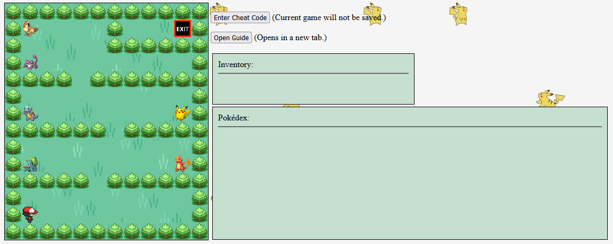
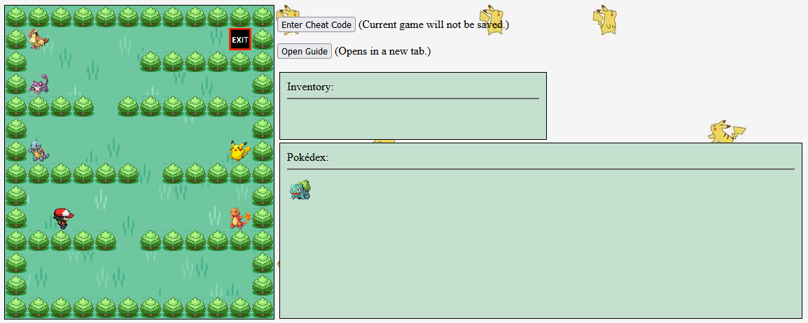

To control the player, you can either use left-handed controls (W,A,S,D) or right-handed controls (arrow keys). The main objective of each level is to reach the exit, but you may also want to collect all of the items and pokémon on each level. Notice that you will not be able to reach the exit (without a cheat code) before either picking up an item or catching a pokémon. If you know what the pokémon are supposed to look like, keep a close eye on the sprites. If you're lucky, you might find that some are shiny. You can reset the game until you get the shiny that you want, but keep in mind you will restart at Level 1.
You begin your pokémon journey in your hometown of Pallet. Professor Oak has four pokémon left that you can take. As you leave, you notice a Rattata and a Pidgey in the grass.
As you enter Viridian City, you see a small patch of grass to the West with several pokémon. You can also go North into Viridian Forest to catch some bug type pokémon.
After Viridian City, you come to Pewter City and your first gym challenge. Collect the boulder badge to unlock Mt. Moon, where you can catch several new pokémon.
Once you leave Mt. Moon, you arrive at Cerulean City. You can collect the cascade badge and trade for a Jynx to the South and catch some new pokémon across nugget bridge to the North.
To the South of Cerulean is Vermilion City. Here, you can collect the thunder badge and then visit Diglett's Cave or explore some other areas to catch more pokémon.
After collecting the thunder badge, you travel back up to Cerulean and head East where you find a dark tunnel and come to the spooky town of Lavender on the other side. You'll need to collect the silph scope before catching any of these pokémon and moving on.
After Lavender, you go West to Celadon City where you find the rainbow badge, a Porygon in a casino, an Eevee on the top floor of a game development building, and a Snorlax blocking your path to the next city.
Getting past the Snorlax, you travel South until you reach Fuschia City. Once you collect the soul badge here, you can enter the safari zone to the North to find the most pokémon we've seen so far.
After Fuschia, you come to Saffron City where you can collect the marsh badge and then challenge the fighting dojo for a fighting type pokémon or rescue the silph company for a Lapras.
You surf to Cinnabar Island to collect the volcano badge and visit the pokémon lab and an abandoned mansion.
After Cinnabar Island, you pass through Pallet, finding a Tentacruel, Poliwrath, and Tangela along the way, and come to Viridian City again. But things here have changed. The bug pokémon have evolved as well as the pokémon in the grass to the West. You collect the earth badge and move on.
You fly to an abandoned power plant where some electric type pokémon are hiding. Get to the end to discover the legendary Zapdos.
After the power plant, you surf to Seafoam Island. You may notice things are a bit different here. You can't jump at all, and if you move in any direction, you slide on the ice in that direction until you hit a rock. You can leave after you catch the Psyduck, but you'll have to go through the ice maze to catch the legendary Articuno.
With all 8 gym badges in hand, you can challenge the Elite Four and your rival. Visit each one to unlock the cave with pokémon in it and move on.
After defeating the Elite Four, you head back to the North of Cerulean City and find a new cave full of very powerful pokémon. You'll need to make the most difficult jumps so far in order to catch Mewtwo.
As you look at the trees in this level, you'll notice they spell out the word "END." But is this really the end? Even if you caught every previous pokémon, you likely still have gaps in your pokédex. But there doesn't seem to be anything here. Explore around this level to find a surprise.
No data available.
I had the idea to make this game while doing the platformer lab for this class (hopefully, it's different enough). I wanted to make it similar to the first homework in terms of storyline. You visit all the same places and collect all of the same items. At first, I was only going to include the 20 or so pokémon that were in the first game, but I ended up putting 100 different species in. The different mechanics in the seafoam island level come from pokémon gold and silver where you had to traverse a similar maze in an ice cave. I wanted to make it a little more fun to play and more interesting to play more than once, so I decided to add shiny sprites to the game as well as cheat codes that control various aspects of how the game is played. Here's an image of the starting level:
Notice that the exit is completely blocked off. When the player interacts with any collectible item (badge or pokémon), some of the blocks disappear. I not only wanted the images to no longer render, but I wanted collisions with these blocks to no longer have an effect. I created a new Object called FluxBlock to implement this. I also wanted to change the collectible items upon collision and add them to either the inventory or pokédex. In fact, all of these items are always on screen, but the opacity changes when the player touches them. I used the DOM to control this. To control the shiny sprites, I used a random number to determine if any given sprite should render as the shiny sprite of that pokémon. Here's an image of the same level after a pokémon has been collected:
If you've gotten this far, I hope you enjoyed this game. I enjoyed making it. Thank you for playing.